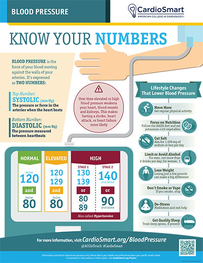

What Is Hypertension (High Blood Pressure)?
Hypertension means the force of blood pushing against your artery walls is consistently too high. It is one of the most common medical conditions in the world — and one of the most dangerous, because it usually causes no symptoms at all while it quietly damages your heart, brain, and kidneys.
Understanding the Numbers
A blood pressure reading has two numbers, written like a fraction:
- Systolic (top number): the pressure when your heart beats and pushes blood out.
- Diastolic (bottom number): the pressure when your heart rests between beats.
Both are measured in millimeters of mercury (mm Hg). Blood pressure normally rises and falls during the day. Hypertension is diagnosed when readings stay high over time. The table below shows the categories used by the American College of Cardiology (ACC) and the American Heart Association (AHA).
| Category | Systolic (top) | Diastolic (bottom) | |
|---|---|---|---|
| Normal | Less than 120 | and | Less than 80 |
| Elevated | 120–129 | and | Less than 80 |
| Stage 1 hypertension | 130–139 | or | 80–89 |
| Stage 2 hypertension | 140 or higher | or | 90 or higher |
| Severely high | Higher than 180 | and/or | Higher than 120 |
A single high reading does not mean you have hypertension — your doctor will confirm it with repeated measurements.

How High Blood Pressure Develops
Think of your arteries as pipes with muscle in their walls. Blood pressure depends on two things: how much blood your heart pumps per minute, and how easily that blood can flow — that is, how wide or stiff, and how relaxed or tight, your arteries are. When arteries tighten or stiffen, the same heartbeat generates much more pressure.
Several systems in your body control this balance, and hypertension usually develops when several of them drift upward together over years:
- Aging and artery stiffness: healthy arteries are elastic and widen with each pulse. With age, smoking, diabetes, and cholesterol plaque, they stiffen and narrow, so pressure climbs.
- Kidneys and salt: your kidneys manage how much salt and water your body keeps. Extra salt means extra fluid in the bloodstream, which raises pressure. High pressure then scars the kidneys' filters, which raises pressure further.
- Hormones: the renin–angiotensin–aldosterone system tightens arteries and tells the kidneys to hold on to salt. In many people it is overactive. Adrenal hormones and stress hormones (adrenaline) also raise pressure.
- Nerves: chronic stress, poor sleep, and sleep apnea keep the "fight or flight" nervous system switched on, which keeps arteries tight.
- Genetics and family history: hypertension often runs in families.
- Weight: excess weight makes the heart pump harder and changes hormone levels.
This creates a vicious cycle: high pressure injures the delicate inner lining of the artery walls, the body repairs it with stiffer scar-like tissue and plaque, and the stiffer arteries push the pressure even higher.
Why It Matters to Diagnose and Treat It
Hypertension is called the "silent killer" for a reason: most people feel completely normal, sometimes for a decade or more, while the damage accumulates. By the time symptoms appear, organ damage is often already present.
The good news is the mirror image: because the damage is silent and gradual, lowering blood pressure works quietly too. Well-controlled blood pressure is one of the most effective ways in all of medicine to prevent stroke, heart failure, heart attack, and kidney failure. That is why we measure it at every visit, and why we treat it even when you feel fine.
What Untreated Hypertension Can Lead To
- Heart attack and coronary disease: damaged artery lining accelerates cholesterol plaque in the heart arteries.
- Heart failure: pumping against high pressure thickens and then weakens the heart muscle.
- Stroke: high pressure bursts or blocks small brain arteries; it is the leading treatable stroke risk factor.
- Memory loss and dementia: long-standing hypertension is linked to poorer brain health in later life.
- Kidney disease: hypertension is a leading cause of chronic kidney disease and dialysis.
- Vision loss: damaged vessels in the retina of the eye.
- Aortic aneurysm and peripheral artery disease: the main artery can balloon and tear, and leg arteries can narrow.
How It Is Diagnosed
Hypertension is diagnosed with careful, repeated blood pressure measurement — not a single reading:
- Office readings done properly: seated for about five minutes, back supported, feet on the floor, arm resting at heart level, with the right cuff size.
- Repeat measurements over more than one visit, because pressure normally varies day to day.
- Home blood pressure monitoring: a validated, properly fitted upper-arm monitor and a written log of readings — often the most useful information your doctor can get.
- 24-hour ambulatory monitoring: a small automatic cuff worn for a day to capture readings during daily life and sleep; it can also reveal "white coat" or "masked" hypertension.
Once hypertension is confirmed, your doctor will usually check for causes and organ effects with a physical exam, blood tests (kidney function, electrolytes, blood sugar, cholesterol), a urine test, and an ECG. In younger patients or when blood pressure is hard to control, additional testing for secondary causes (such as kidney artery narrowing, hormone problems, or sleep apnea) may be recommended.
How It Is Treated
Treatment pairs lifestyle changes with medication when needed. Many people need both.
Lifestyle changes
- Heart-healthy eating (DASH-style diet): rich in fruits, vegetables, whole grains, and low-fat dairy; low in processed foods.
- Cut sodium: aim for under 2,300 mg per day (about one teaspoon of salt), ideally closer to 1,500 mg. Most sodium comes from restaurant and packaged foods, not the salt shaker.
- Physical activity: at least 150 minutes per week of moderate activity such as brisk walking (or 75 minutes of vigorous activity), plus muscle-strengthening twice a week.
- Reach a healthy weight: even modest weight loss lowers blood pressure.
- Limit alcohol: at most 2 drinks per day for men, 1 per day for women.
- Do not smoke or vape.
- Protect your sleep: aim for 7–9 hours and tell your doctor if you snore heavily or feel unrefreshed — sleep apnea is a common hidden driver of hypertension.
- Manage stress and mental health; chronic stress keeps blood pressure up.
Medications
If lifestyle alone is not enough, modern medicines are safe and effective. The most commonly used first-line classes:
- ACE inhibitors and ARBs: relax and widen blood vessels and help protect the kidneys.
- Calcium channel blockers: relax the artery walls.
- Thiazide diuretics ("water pills"): help the kidneys remove salt and fluid.
- Beta-blockers and others: slow the heartbeat or act in combination; often added when other conditions such as heart disease coexist.
Most people eventually need more than one medicine at low dose rather than one at high dose — that gives better control with fewer side effects. Take them every day even when you feel well, never stop them on your own, and tell your doctor about side effects so the regimen can be adjusted. Your doctor will set a target that is right for you — for most people it is below 130/80 mm Hg.
When to seek urgent care
Call 911 if your blood pressure is above 180/120 mm Hg and you have chest pain, shortness of breath, back pain, numbness or weakness, changes in vision, difficulty speaking, or a severe headache. Those signs can mean a hypertensive emergency.
Key Takeaways
- Hypertension has no symptoms — the only way to know is to measure.
- It damages the heart, brain, and kidneys silently over years.
- Diagnosis takes careful, repeated readings, often including home monitoring.
- Treatment is lifestyle plus, if needed, medication taken daily.
- Controlling it is one of the most powerful ways to prevent stroke and heart failure.
Reliable Sources
- CDC, About High Blood Pressure
- CDC, Preventing High Blood Pressure
- CardioSmart (American College of Cardiology), Blood Pressure — infographic
- 2017 ACC/AHA Guideline for the Prevention, Detection, Evaluation, and Management of High Blood Pressure in Adults (basis of the category table above)
This page is for general education only and does not replace advice from your doctor. If you have questions about your own blood pressure, please contact the office.